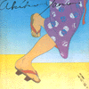

 | #10月はー矢野顕子に決定。今更ながら... しかし新しいCD全然買ってないなぁ。
|
-1999.10.26
#えーと(毎日書くのめんどくなってきた)椎名林檎/本能とりあえず買うでしょ。あと閉店セール#2ということで矢野顕子/JAPANESE GIRLに濱田理恵/Darieそんなとこ。
-1999.10.25
#会社にのんびり行ってみれば、その日は定時退社日ということで、あんまり仕事もせずボーっとしたまま帰ってくる。なんだかなー、こんなんじゃダメですね。ダメだ。
とりあえず実弟からの"近くのCD屋が閉店セールをしてる"情報を聞いてたので、チャリンコで中原街道を走って、NEW WORLDというCD屋に。ほとんど40%オフになってたんですけど、すでに店内ロクなCDが無し。CDで持ってないビートルズ何枚かと、60%オフな矢野顕子/長月 神無月を購入。あ、あとレディメイドのピチカートファイブも。
矢野顕子ってこんな昔の聴いた事無かったんですけど、すげー良い。やっぱこの人天才すね。
-1999.10.24
#ボーリングで再び渋谷。しかし前日のヘロヘロが続き朝イチ体が動かず、1時間遅刻。ヘロヘロは続き、2ゲームで106/130ですた。
その後は飯-ゲーセン-お茶で、今度こそとオンエアへ行き大木理紗のチケットを買う。あと、ディスクユニオンで難波弘之/Party Tonightは100円。ヒドイ値段だ....何故か生写真付き。
-1999.10.23
#昼起き、夕方から動き出して11/3のチケットを買いに渋谷のオンエアの近くまで行って見たら何やらビジュアル系のコンサートらしく人でごった返していて、嫌になって買わずにもどってきました。んで、レコファンに寄ったらKATRA TURANA/Kimeraを発見 & 購入。
その後飲んで、2次会も飲んで、家帰ってヘロヘロでした(ウチに約2名宿泊)
-1999.10.20
#仕事仕事の毎日、ほんとは日曜日にモトコンポのカセットテープを\300で入手したり、AFTER HOURS(なんか超マイナーな洋楽の雑誌)付録のCD聴いたりしてましたけど、とりあえず後ほど。更新記録の形式ちょっと変えてみたり。そんだけ。
あと12月末に、是巨人と高円寺百景のライヴがあってゲストが菊地成孔みたい、是巨人はCDも買ったんで、これは行くしか。
あとなんか12.13のPESTの対バンはRUINS + 清水一登なのかも。よくわからんけど。
-1999.10.16
#Keith Tippettのライヴを法政大学で見てきました。とりあえず市ヶ谷降りてから道間違えたのはbbsに書いたとおりでした。
なんか英国紳士って感じの人でしたが、前半後半40分ずつピアノに集中しっぱなしの即興演奏。物凄い集中力で、ピーンと張り詰めた空気で、ちょい前見たCharles Haywardにもある意味通じるものがあったかも。ほんとにスゴイ人.....ちょっとびっくり。
法政大学のホールは広くて客いなくって、ゆったり見れました。でも誰が何やってるかくらい書いた方が良いのではないかと、思いました。(法政大学入ってからも迷った人より)
-1999.10.13
#久しぶりに定時で会社を脱出。昨日知合いとスカイメールしてて、文字にしてよーやく自分の(けっこう)ヒサンな生活に気付きました。こう、「夕飯は？」って聞かれて「社食のそば」じゃないよなぁ.....トホホ。
ま、そんなわけで。掲示板みてNEGAさん書いてたつじあやの/君への気持ちってのを。なんかウチの裏の中古屋さん行ったら\480で有ったので購入。求めよさらば...って感じですかね、なんてタイムリー。
関係無いけど最近またライヴ見たい熱が急上昇してきて。んで自分でも忘れそうなのでここにメモっときます。
-1999.10.11
#昨日はCharles Haywardのライヴを見に吉祥寺Star Pine's Cafeへ行ってきました。いやぁスゴイスゴイスゴイ。Haywardのソロって聴いたこと無かったので想像つかなかったんですけど、42.195km全力疾走するような....見てるこっちも疲れるライヴでした。ライヴを見に行ってドラムの音をあんなにクッキリ聴いたのもはじめてかな？しかしスゴイオヤジですねー40過ぎなのに...あの体力。
そんなわけで吉祥寺でお買い物、の前に渋谷バナナレコードで山下毅雄を斬るを購入、ついでにストレンジデイズの5号も。なんか近くで売ってなくって。
そして吉祥寺ディスクユニオンにて偶然その日発売のHappiness Proofを、あとちょっと捜してたdahllia/June foolを購入。なんかアーントサリー(Phewさんと今ラブジョイのBikkeさんがいたバンド)のLPが7万円で売ってました....信じられない。
そうそう、この日会ったミナサマありがとうございました。
ちなみに今日は古本屋でルーディーラッカーのホワイトライトを買って。前から安く売ってないか捜してた吉岡忍/water the flowerを買って、レイトショーの「ビッグリボウスキ」見てきました、今更、一人で。なんかダメダメ人生映画ですねー、相変わらずデブ出てくるし。
しかし、スキャナー使えるようになったのになかなか更新できないなぁ....ちょっと反省して少しずつジャケ写真(もどき)入れてきます。
-1999.10.3
#つ・い・にースキャナーゲット。ありがとう&ありがとう&ありがとう荒井くん。そんなもんでついつい色々作ってみちゃったりします。これからはインチキ臭いピクチャが沢山張りこまれることでしょう。きっと。
ちなみに土曜ウチでおでん大会して、そのまんま日曜日東京タワーへGOでした。なんかRother/Mobiusが12月頃来日するよーで。楽しみ楽しみ。
あと"direct"ってインディの音源を沢山収録した雑誌を買ってみました。サンプル100曲も聴くとなんだかわかんなくなってきますね。18曲目の"HATI"って女の人が結構良かったかな？全然知らない人の中では。
そんなわけで、リンクを追加だす。となりの駅に住む晶子さんのページと荒井くんのページだ。と思ったら荒井くんのページのアドレス忘れた、またあとで。